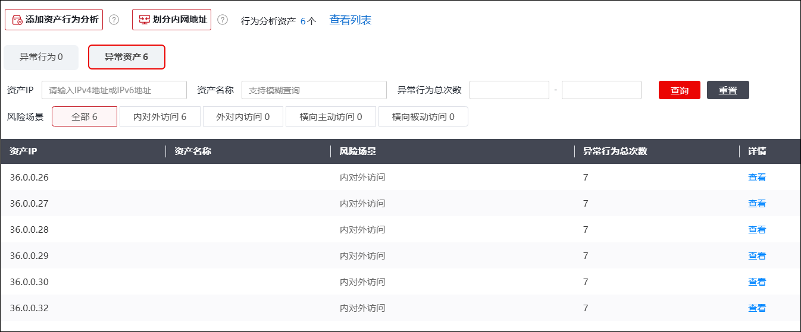
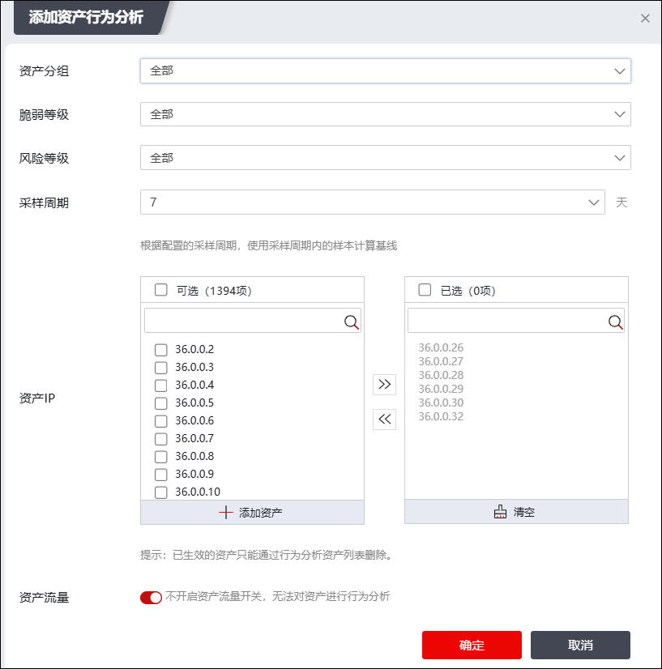
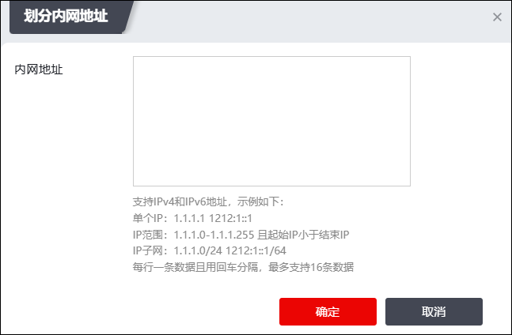
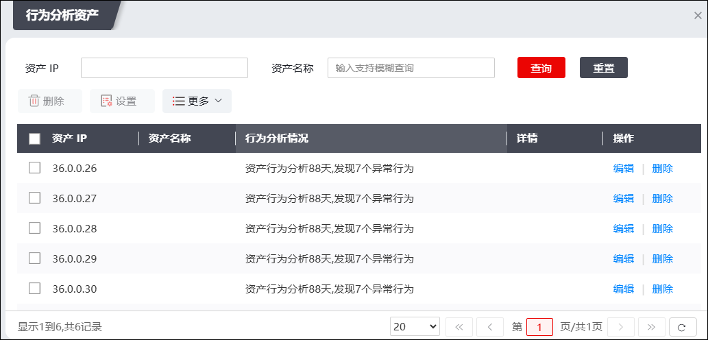
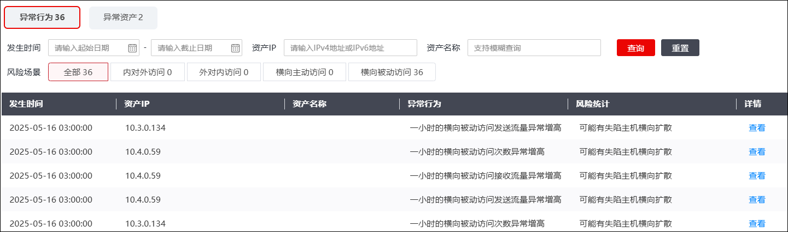
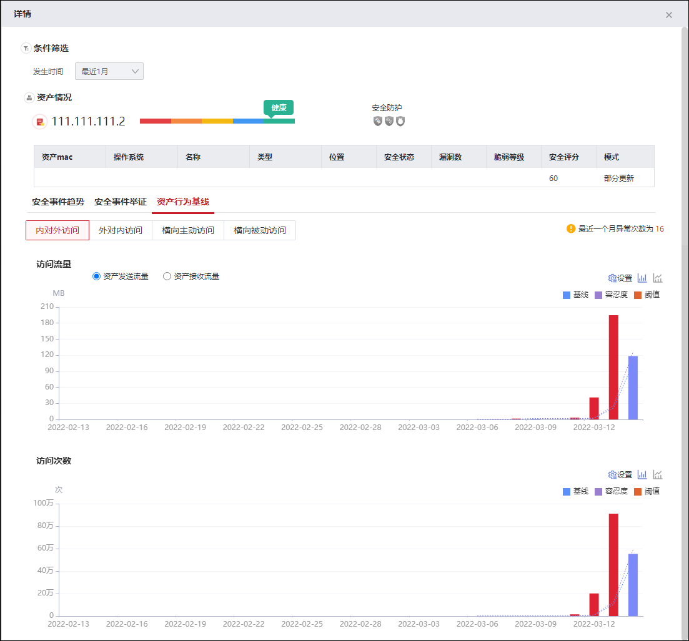
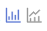
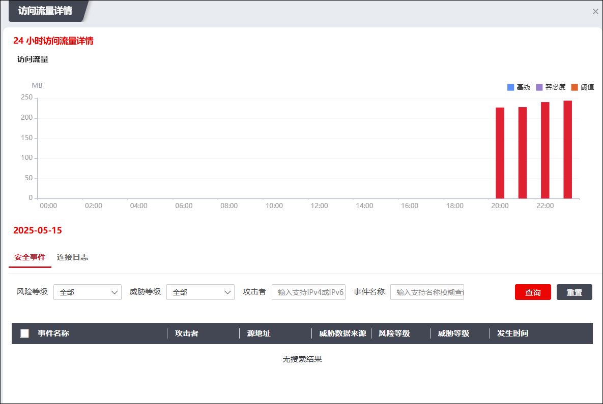

行为基线模块可以通过对已有资产进行周期性的分析形成资产行为基线，并随着时间逐渐准确，最终达到检测，记录资产异常行为的效果。
配置行为基线模块的具体操作如下：
| 步骤1 | 选择 ，界面如下图所示。 |

| 步骤2 | 添加资产行为分析 |
点击界面左上角的“添加资产行为分析”，弹出窗口界面如下图所示。

在配置资产行为分析时，各项参数的具体说明如下表所示。
参数 |
说明 |
|---|---|
资产分组 |
选择资产行为分析的资产分析对象类别，可选项：全部、服务器、工作站、网络设备、其他。 |
脆弱等级 |
选择资产行为分析的分析对象脆弱等级阈值，可选项：全部、高、中、低、信息。 说明： 此处选择“高”，则脆弱等级为“高”的资产对象会作为该次资产行为分析的分析对象。 |
风险等级 |
选择资产行为分析的分析对象风险等级阈值，可选项：全部、已失陷、高危、中危、低危、健康。 说明： 此处选择“高危”，则风险等级为“高危”的资产对象会作为该次资产行为分析的分析对象。 |
采样周期 |
配置采样周期，单位“天”。 |
资产IP |
进一步通过IP地址圈定资产行为分析的范围。选中需要添加的资产IP，再点击右箭头，即可添加进资产行为分析列表中。 |
资产流量 |
设置是否开启资产流量开关，对资产进行行为分析。 |
配置完成后，点击【确定】完成资产行为分析配置。
| 步骤3 | 划分内网地址 |
点击界面左上角的“划分内网地址”，弹出窗口界面如下图所示。

输入内网地址，支持输入IPv4/6格式的IP地址/地址范围/子网；输入完成后点击【确定】完成配置。
|
²没有划分内网时： A、B、C三类私网地址和资产IP视为内网；除判定内网地址外的其它地址视为公网地址； ²划分内网地址时：A、B、C三类私网地址、资产IP、手动划分的内网地址视为内网地址；除判定内网地址外的其它地址视为公网地址。 |

| 步骤4 | 查看行为分析结果 |
在配置完成资产行为分析行为和划分内网地址后一段时间，设备会对符合条件的资产进行行为分析。点击“行为分析资产XXX个或查看列表”中的数字即可查看资产角度的行为分析结果，弹出窗口界面如下图所示。

点击“详情”，可以查看资产详情，如下图所示。具体操作请参见 安全事件 章节的相关内容。
勾选指定资产，点击“设置”按钮，可配置资产“内对外访问”、“外对内访问”、“横向主动访问”、“横向被动访问”的发送/接收流量及访问次数的相关设置。
| 步骤5 | 查看异常行为&异常资产 |

界面默认展示“异常行为”页签，内容为检测到的资产异常行为，管理员可以通过使用列表上方的查询模块以及风险场景切换按钮来筛选展示在列表中的异常行为事件。
查看异常行为&异常事件详情的操作类似，下面以查看异常行为为例说明具体操作：
点击资产所在行的“详情”列中的“查看”，弹出界面如下图所示。

对统计图中三类基线的详细说明如下表所示。
基线名称 |
说明 |
|---|---|
基线 |
NGFW会从统计中读取样本周期（添加资产时配置的采样周期值为样本周期，默认7天）对应历史时间的原始数据，计算出当天的日基线值和今天每小时的基线值，用作当天判定异常行为的标准。 |
容忍度（基线） |
显示为基线的上调百分比。 |
阈值 |
静态值，为管理员配置的阈值。 |
点击“

”，可以切换界面展示的形式（柱状图/折线趋势图）；点击“设置”可以配置资产行为的相关参数，关于此部分参数信息和统计图页签信息，请参见 资产行为参数 。点击图像中的红色柱状图，可以跳转至“访问流量详情”界面，如下图所示。

界面展示了24小时内流量/次数变化的详情。
|
²删除资产行为后，“异常资产”和“异常行为”标签页下的数据会被清空。 ²资产长时间断电会导致基线显示中断。 ²“行为基线”模块需要开启“资产流量”开关，否则页面不显示任何数据（资产流量开关在 的“统计开关”页签。） |